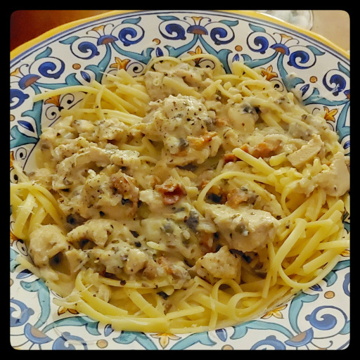

Chicken Bacon Alfredo
A cream and crunch flavour punch.

olive oil
onion
bacon
mushrooms
spaghetti or linguine
chicken breasts or thighs
butter
salt
pepper
white wine
chicken stock
corn starch
oregano
parsley
celery seeds
parmesan, romano, or asiago
cilantro
Put on a pot of water to boil.
Dice and saute an onion in some olive oil in a large frying pan or wok.
Cut a few bacon strips into bite-sized pieces and fry in a separate pan until crispy. Place on a paper towel when done to drain the fat.
Chop a few mushrooms into tiny little pieces so the kids won't complain about them, and add to the onions.
When the water boils, add pasta and cook per it's instructions.
Thinly slice chicken and add to pan. Salt and pepper the chicken.
Add a dollop of butter.
When the chicken is browned, pour in about a cup of white wine and bring to a boil.
Add enough chicken stock to get the consistency just barely liquidy.
Reduce heat to low and add cream.
Dissolve a tablespoon of corn starch in stock, and add.
Add oregano, parsley, celery seeds.
Grate in about a cup of cheese.
Add the cooked bacon pieces.
Stir often as the sauce thickens.
Stir in freshly chopped cilantro just prior to serving.
Serve over the pasta, and grate fresh parmesan.